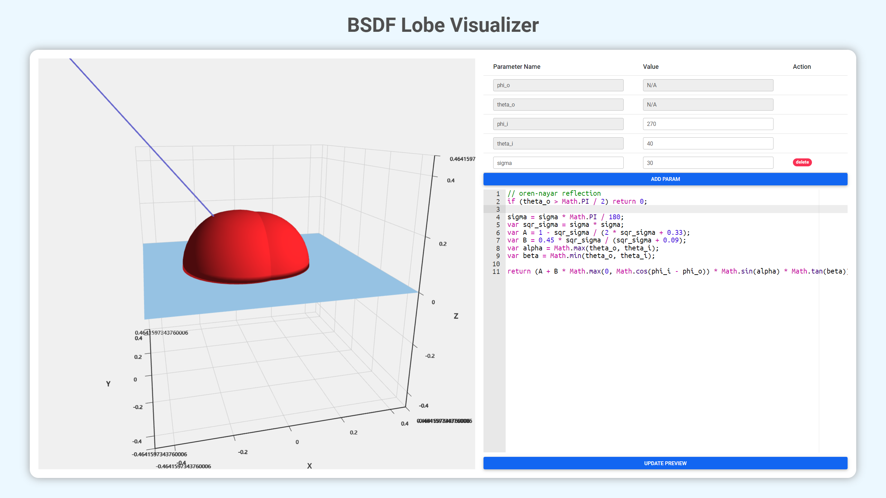

BSDF Lobe 可编程可视化工具 | BSDF Lobe Visualization
在某个寒冷的冬日，一个萌新正在读论文。就在此时，他看见了一个从来没有见过的 BSDF 定义：
fr,s(θi,φi,θr,φr,λ)=πcosθi132F(θi,λ)⋅exp[−(4πλσcosθi)2]+cosθicosθrF(θi,λ)π3(λa)2(λσ)2(cosθi+cosθr)4⋅exp{−(λπa)2[sin2θi+sin2θr+2sinθisinθrcos(φi−φr)]}
这玩意叫 Davies BRDF, 常用于卫星的光谱和光度信号仿真
小萌新一下子就蒙了，他不知道这个复杂又奇葩的 BRDF 到底描述了一个什么东西，为了解决这一问题（顺便逃避一下这个项目），他掏出曾经学过的 WEB 和可视化知识，摸鱼半日终于做出了一个简陋但可编程的 BSDF Lobe 可视化工具

简介
这么简单的玩意还有甚么介绍的必要吗，只要在右边填上你需要的变量和 BSDF 的计算方法（in JavaScript），最后按一下下面那个按钮不就完事了。
技术路线
（这点屁技术真的有人看得上吗）
- Vue：web 框架
- Material Design Bootstrap：直接嫖的样式
- Ace：代码高亮
- ECharts / ECharts GL：无脑的可视化工具
说是 TODO 实际上做不做完全随缘的列表
- [ ] 增加内置的 utils 函数
- [ ] 增加一点 samples
- [ ] 改进 tooltip 的显示内容
相关链接
Demo: https://apassbydreg.github.io/BSDF_Lobe_Visualization/
Repository: https://github.com/APassbyDreg/BSDF_Lobe_Visualization
它甚至可以用简单的 iframe 嵌入别的网页呢
1
| <iframe style="border: 0px; width:100%; height: 75vh;" src="https://apassbydreg.github.io/BSDF_Lobe_Visualization/">
|